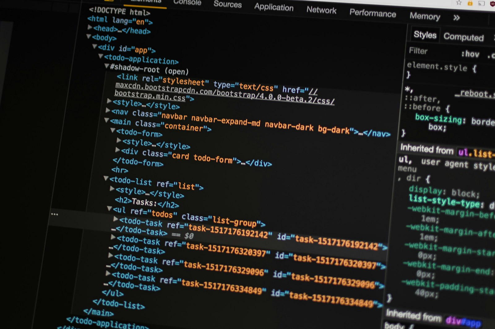

The Technologies
Behind My Work.
A practical toolkit for designing interfaces, developing application logic, and building complete web solutions.
Interfaces that work — everywhere.
I build structured, responsive interfaces with semantic markup, modern CSS layout systems, and JavaScript that manipulates the DOM thoughtfully. The preview on the right is a live, working widget — interact with it.
- Responsive layouts
- Semantic HTML
- DOM manipulation
- Event handling
- Form validation
- API integration
- Interactive interfaces
- Accessibility fundamentals
GET /api/projects HTTP/1.1
HTTP/1.1 200 OK
{
"success": true,
"data": [
{
"name": "Point of Sale System",
"type": "Full-Stack"
},
{
"name": "Portfolio",
"type": "Full-Stack"
}
]
}Server-side logic, built responsibly.
I develop RESTful services in JavaScript end-to-end: routing, middleware, request/response handling, environment configuration, and structured error handling. Express.js is featured where my practical projects support it.
- REST API development
- Server-side JavaScript
- Request & response handling
- Routing
- Middleware
- Authentication fundamentals
- Error handling
- Environment configuration
Every change, tracked. Every feature, reviewed.
I work with Git branching, meaningful commits, pull requests, merge-conflict resolution and collaborative workflows — the same loop visualized above.
The tools I depend on.

Editor & Tooling
- VS Code — daily driver
- Browser developer tools
- API testing (Postman / curl)
- Node.js debugging
Practices
- Git & GitHub version control
- Structured code organization
- Systematic debugging
- Environment-based configuration
How I actually write code.
Real examples from my working style — no fake output, no magic. Copy anything you find useful.
Core skills — and what's next.
Everything in the left column is demonstrated by my projects. The right column is deliberately separated: technologies I'm actively exploring, not yet mastered.
- HTML5 & CSS3
- JavaScript (ES6+)
- Node.js
- REST API development
- Git & GitHub
- Responsive development
- Express.js — deepening practical routing & middleware experience
- Databases — fundamentals of SQL and data modeling
- Automated testing — writing my first test suites
Want These Skills on Your Team?
The portfolio is the proof of work. Let's talk about yours.